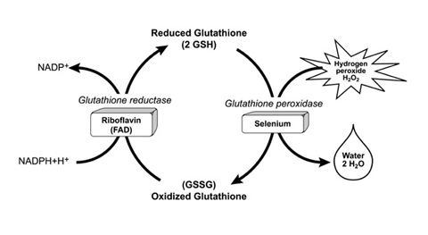

Selen
Tilbake til artikkelserien om næringsstoffene
Selen har atomnummer 34, og regnes som et sporelement. Det finnes en del selen i sjøvann, men i jordskorpen er innholdet svært varierende. Til å begynne med fikk selen mest oppmerksomhet fordi det i store doser hadde toksiske effekter hos gårdsdyr, men etterhvert ble også viktigheten av selen i kostholdet dokumentert, da man oppdaget at tilskudd av selen kunne forhindre sykdom i områder med lavt seleninnhold.
Opptak og metabolisme
I kosten finner vi selen i ulike former, men hovedsakelig finner vi det bundet til aminosyrene metionin eller cystein. Selen erstatter da et svovelatom i disse og danner såkalte selenoproteiner, selenometionin (Se-Met) og selenocystein (Se-Cys). Vi finner også litt uorganisk selen i form av selenitt og selenat. Opptaket av de ulike formene varierer.
Selenoproteinene er inkorporert i proteiner og følger da først og fremst proteinfordøyelsen, der de brytes ned til enkelte aminosyrer, Se-Met er den formen som absorberes best, gjennom et natriumavhengig transportprotein i tynntarmen. Etter absorbsjonen i tarmen så vil Se-Met bindes til hemoglobin i blodet og fraktes til lever og muskelvev der den bygges inn i proteiner og akkumuleres. Se-Cys absorberes på samme måte, men mindre effektivt. Etter absorbsjonen tas Se-Cys opp av røde blodceller. Som dere får se lenger nede så er Se-Cys den viktigste formen i kroppen, og er klar til å brukes direkte. Se-Met må på sin side i stor grad brytes ned slik at selenet kan inkorporeres i Se-Cys.
Uorganisk selen absorberes passivt ved diffusjon med en biotilgjengelighet på over 50%. Selenitt tas opp bedre enn selenat, og etter opptak metaboliseres selenitt til selenid. Selenid binder til hemoglobin eller albumin og transporteres til leveren. Selenat fraktes som den er til leveren der den enten metaboliseres eller fraktes videre og skilles ut i urinen.
I kroppen finner vi selen først og fremst i muskelvevet, men dette er mest fordi dette utgjør en så stor del som kroppen. Hvis vi tar hensyn til størrelsen på organene så finner vi størst konsentrasjoner i nyrene, etterfulgt av leveren, milten, bukspyttkjertelen, hjerte, hjernen, lungene og beinvevet. Leveren blir imidlertid ansett som det viktigste organet i selenmetabolismen, ettersom det er her det meste av metabolismen styres.
I leveren kan selen enten metaboliseres til trimetylselonium eller selenosukker, som er metabolittene som først og fremst skilles ut i urinen. Det andre som kan skje er at selenet inkorporeres i selenoproteiner for bruk i kroppen. Det viktigste selenoproteinet i blodet, hovedtransportformen, heter Sepp1. Denne absorberes av målcellene først og fremst gjennom ApoE-reseptoren eller megalin som er en annen lipoproteinreseptor. Inne i målcellen brytes Sepp1 ned av et enzym som heter Sec-β-lyase, noe som frigjør Se-Cys som da kan inkorporeres i selenoproteiner inne i cellen. Selen fraktes også i blodet inkorporert i antioksidanten glutation peroksidase eller bundet til albumin.
Utskillelsen av selen skjer først og fremst i urinen i form av trimetylerte (tre metylgrupper) selenforbindelser eller selenosukker. Dersom seleninntaket er for stort vil selenet bare dimetyleres (to metylgrupper) og kunne skilles ut via lungene og ut med pusten.
Funksjoner
Selen utfører sine funksjoner inkorporert i ulike proteiner, selenoproteiner, først og fremst i form av Se-Cys. Selen finnes i alle kroppens celler, og det er identifisert over 25 ulike selenoprotein-gensekvenser hos mennesket. Flesteparten av disse proteinene vet vi enda ikke betydningen av, men noen er ganske godt kartlagt.
Se-Cys inkorporeres i proteiner som respons på et genetisk kodon som vanligvis ville fungere som et stoppkodon, UGA. For at dette skal være mulig så har selenoproteinene et element (SECIS) i sitt mRNA som setter igang prosesser som gjør at Se-Cys inkorporeres der translasjonen normalt sett ville stoppet opp.
Selenoproteinene kan grovt sett deles inn i tre kategorier. Den første kategorien er proteiner som inneholder Se-Met. Disse er ikke kjent for å ha en viktig funksjon. Vi kan også finne proteiner der selen er bundet til men ikke inkorporert i en aminosyre. I denne klassen har vi blant annet selenbindende protein, som per i dag ikke har en kjent funksjon ettersom det å bytte ut Se-Met med vanlig metionin ikke ser ut til å endre proteinets egenskaper. Det er indikasjoner på at den kan påvirke hvor sensitive vi er for oksidativt stress eller dannelsen av kreftsvulster. Den viktigste klassen selenoproteiner er de som inneholder Se-Cys, og det er disse resten av avsnittet hovedsakelig vil omhandle. Selv om funksjonen til mange av disse er kartlagt, utforskes disse fremdeles i litteraturen. Selenoproteinene kan grovt sett deles inn i syv funksjonelle klasser.
1. Antioksidantenzymer
Selenoproteiner er viktig for funksjonen til glutation peroksidase (GP), som er vår viktigste antioksidant. Det er syv kjente varianter av GP, hvorav fem inneholder Se-Cys. Disse er uttrykt i ulike kroppsvev og er involvert i ulike deler av antioksidantforsvaret. Genetiske polymorfismer i genene som koder for de ulike GPene er forbundet med risiko for spesifikke sykdommer, noe som understreker hvor viktige de er.

2. Redokssignalering
Thioredoksin reduktase er et enzym som inngår i redoks-reaksjoner inni cellene. Vi kjenner til tre selenavhengige varianter av dette enzymet. Dette er viktig for flere prosesser, som DNA-syntese, regulering av gentranskripsjon og regulering av cellevekst.
3. Tyroideahormonmetabolismen
Flere dejodinaser (DIO) er selenoproteiner, og dette er blant de selenoproteinene med en klart definert funksjon. Disse er nødvendige for å omdanne T4 til T3, og er derfor viktig i reguleringen av tyroideahormonene (les mer om jod). Vi kjenner til tre dejoidinaser (DIO1, DIO2 og DIO3) som både aktiverer og inaktiverer tyroideahormoner ved å fjerne spesifikke jodatomer. Mutasjoner i genet for SECIS-bindende protein (viktig for å inkorporere Se-Cys i proteinene) har vist seg å gi unormale tyroideaprøver, noe som antas å være pga endret DIO-funksjon.
4. Syntese av Se-Cys
Syntesen av Se-Cys er avhengig av andre selenoproteiner, deriblant selenbindende protein 2.
5. Selentransport
Sepp1 (selenoprotein P) er et ekstracellulært glykoprotein som finnes i blodet. Dette er et transportprotein, og en av oppgavene til dette proteinet er å forsyne blant annet hjernen og testiklene med selen, for å opprettholde normal nervefunksjon og spermieproduksjon. Som nevnt under metabolismeavsnittet så tas dette opp i målcellene ved å binde til enten ApoE-reseptoren eller megalin.
6. Proteinfolding
Flere selenoproteiner er vist å være innblandet i foldingen av proteiner, som er viktig for proteinenes funksjon. Disse inkluderer Sep15, SelN, SelM og SelS. Mutasjoner i genene som koder for disse proteinene er assosiert med risiko for sykdommer, deriblant kreft og hjertesykdom.
7. Ukjente funksjoner
Flere av selenoproteinene har vi fremdeles ikke full oversikt over funksjonene til. Som eksempel kan selenoprotein W nevnes, som har en betydning for muskelfunksjon, men også er observert i andre typer vev
Behov og anbefalinger
Behovet for selen avhenger av flere faktorer, blant annet eksponeringen for oksidativt stress.
Et tilstrekkelig inntak av selen for mennesket er beregnet til å være 0,1µg/g inntatt mat (tørrvekt). Hvis vi antar at vi i gjennomsnitt inntar ca 500g mat (tørrvekt) om dagen, vil vi trenge ca 50µg selen/dag. Dette er basert på dyrestudier. Studier på mennesker har vist at dette stemmer ganske bra med tanke på å maksimere aktiviteten til de selenavhengige prosessene i kroppen.
De norske anbefalingene ligger i dette området, rundt 50µg/dag, noe som fint dekkes av et variert kosthold.
Mangeltilstander
Mangel på selen er svært sjelden, og for å skape en selenmangel ved utilstrekkelig inntak hos forsøksdyr, må man ha forsøk som går over flere generasjoner.
I Kina, i områder der jorden er spesielt fattig på selen, har det opp gjennom tiden blitt observert to mangelsyndromer som er knyttet til selenmangel: Keshan’s sykdom, som er en svært dødelig hjertesykdom som først og fremst rammer barn og kvinner i fertil alder, og Kashin-Beck’s sykdom, som gir slitasjegikt med deformering av bein som ytterste konsekvens. Bevisene for at dette skyldes selenmangel er ikke helt sikre, og det spekuleres i om det i større grad kan skyldes andre ting som jodmangel, polymorfismer i selenoproteinene eller virusinfeksjoner. Det er uansett sterke indikasjoner på at de med lave selennivåer er mer utsatt for disse sykdommene, noe som kan henge sammen med at de har redusert motstandskraft mot infeksjoner.
Kombinert med jodmangel øker risikoen for å utvikle kretinisme og struma. Kombinert med E-vitaminmangel øker det oksidative stresset på organismen.
Pasienter som får langvarig total parenteral ernæring (intravenøs ernæring) var tidligere utsatt for selenmangel, men nå tilsettes selen i disse blandingene, så det er ikke lenger et problem.
Kan vi få for mye?
Akutt forgiftning av selen kan gi pustevansker, hjerteinfarkt eller nyresvikt. Kronisk forgiftning, kalt selenose, skyldes langvarig høyt inntak. Selenose kan gi symptomer som som tap av hår og negler, utslett, nevropati, kvalme, diaré, utmattethet og irritabilitet. Skader på tennene kan også oppstå. Mekanismene som antas å forårsake symptomene er for stor produksjon av selenoproteiner eller oksidativt stress av fritt selen.
Men, selv i selenrike områder er det ikke observert selenforgiftning som følge av inntak fra kosten. Det mest kjente eksempelet på selenose er fra USA i 2008, der over 200 personer ble rammet. Disse hadde brukt et kosttilskudd som viste seg å inneholde store doser selen, langt over det som var deklarert på pakken. I Kina har det vært observert tilfeller av forgiftning, der det under sultperioder har vært inntatt store mengder av selenholdige planter.
Det er knyttet bekymring til hvorvidt tilskudd av selen i seg selv kan gi negative effekter dersom inntaket fra maten er tilstrekkelig. Se mer om dette under aktuelt.
Gode kilder
Opptaket av selen er vanligvis mellom 50-100% av det vi får i oss, og påvirkes ikke av selennivåene våre. Det er derfor hvor mye vi får i oss som primært er av interesse for hvor mye vi tar opp. Selen finnes det, som nevnt i innledningen, en del av i sjøvann, og sjømat er derav rikt på selen. Kjøtt, innmat og meieriprodukter er også gode kilder til selen, da dette tilsettes i dyrefor. Paranøtter er en god kilde til selen, og inneholder hele 250µg per 100g.
Innholdet av selen i vegetabilske matvarer er veldig varierende. Selen er ikke jevnt utbredt i jordskorpen, så dette avhenger av hvor matvarene er dyrket. Selen har vist seg å ikke være en essensiell komponent i planteceller, så innholdet avhenger bare av dyrkingsforholdene.
Aktuelt om selen
Det er foreslått at selen spiller en rolle når det kommer til å motvirke tungmetaller i kosten. Et godt tegn på dette er den lave biotilgjengeligheten av selen fra tunfisk. Det antas at dette skyldes at selen binder til tungmetallene og hindrer opptak av disse.
Selen har fått stor oppmerksomhet når det kommer til ulike helseutfall. Først og fremst gjelder dette immunsystemet, noe som hovedsakelig er studert ved selenmangel. Det er vist at lavt inntak av selen har en negativ effekt på viktige komponenter i immunsystemet som lymfocytter og neutrofiler.
Selen har også fått en del oppmerksomhet for dets mulige rolle i forebygging av en rekke krefttyper. Mange epidemiologiske studier har indikert en slik sammenheng, som er sterkest for tykktarm- og prostatakreft. Disse sammenhengene støttes av dyrestudier, men i kliniske studier med tilskudd av selen har resultatene vært veldig motstridende. Mekanismene som antas å ligge til grunn er kontroversielle. Det er nærliggende å anta at dette henger sammen med enkelte selenoproteiner, ettersom seleninntaket påvirker nivåene av disse. Dette støttes ved at genetisk variasjon i disse proteinene er assosiert med sykdomsrisiko, og i musemodeller der man har redusert evnen til å produsere disse proteinene finner man det samme. Uavhengig av hvilken mekanisme som måtte ligge til grunn så ser det ut til at selen først og fremst påvirker kreftrisikoen ved å forebygge mutasjoner.
I studiene som har undersøkt sammenhengen mellom selen og kreft er det observert en økning i forekomsten av diabetes type 2. Det er også assosiasjoner mellom høyt inntak (høyt inntak fra mat i tillegg til tilskudd) og dyslipidemier/hjertesykdom. Dette har ført til bekymring over hvorvidt selentilskudd hos de med et tilstrekkelig inntak kan øke risikoen for sykdom og total dødelighet.
Artikkelen er sist oppdatert juli 2013